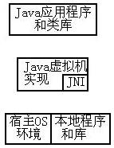
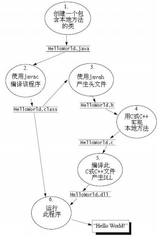

JNI全攻略之二――JNI基础
JNI－java native interface通常被成为Java本地方法，它是Java虚拟机实现的一部分，因此我们可以在任何的虚拟机上使用JNI。通过JNI我们可以完成和宿主计算机（就是安装JVM或者JDK的操作系统）以及在此系统上用C或C++语言写的本地程序了！以下是Java虚拟机、JNI以及宿主计算机、本地程序以及java应用程序和类库的层次关系！

从上面的图可以看出：JNI是Java虚拟机的一部分，在它之上Sun公司提供了大量的类库，这些类库一般分门别类地以包的形式提供，如用于网络编程的net包、用于图形界面编程的swing包…（这是Sun公司提供给广大程序设计者的金山银山，在其类库中包含大量的设计理念、设计方法！毫不夸赞地讲、很负责任地讲它包含了软件发展至今的大部分思想！不信！它本身就是一个典型的OOP的典范：在IO中使用了装饰器模式，在Swing中使用了FlighWeight模式、Composite模式，在Collections Framework中使用Iterator模式、Decorator模式，同时它本身也是一个很优秀的Framework、其对网络的支持使其也是前所未有的……它是我们学习java最好的教程！且完全免费哦！）Java虚拟机也是一个程序它是用其它语言，如C、C++实现的，我们现在研究的JNI是Java虚拟机规范的一部分，在研究JNI后我们可以进一步研究Java虚拟机，从而可以研究操作系统之类的东西！java虚拟机是运行在操作系统上的程序而已，通过JNI是java应用程序可以和操作系统交互，例如我们的类库中的很多实现都是使用JNI，最最经常看到的就是Thread类中的Native方法。同时使用JNI我们可以让java和用C或C++写的本地程序交互。
一般的程序员很少会使用到JNI，甚至85%的人一辈子都不可能使用到JNI，但是在以下情况下，我们一般会使用JNI。
1. 将已有的C、C++应用程序或现有系统集成到Java应用程序中；
2. 在已有语言C、C++集成Java虚拟机；
3. 实现Java虚拟机；
4. 理解语言集成的具体细节，例如如何垃圾回收、如何实现多线程、如何实现SWT中的某些细节……
不过你想更好地使用java、更好地发挥java的特性，甚至只是为了增长你的知识，学习别人优秀的地方，你可以选择学习JNI。（学不学是你的事，研究不研究是其它人的事！竟然有此中人喧嚣“用不到的，中国人都用不到的”――谢谢你哦！那是你，不是所有的人！你不是别人的上帝！）学习JNI一般比较简单，这主要是由于JNI是JVM实现的一部分，我们只不过是在调用系统提供的函数罢了！假如你喜欢研究、想提高自己的层次、想在此行业有所作为、请继续研究吧！下图是使用JNI的六个步骤。（具体步骤、你可以参照本系列的第一部分）

使用JNI和本地程序交互包含以下六个步骤：
1. 创建一个java应用程序，其中包含若干个本地方法。本地方法具有以下标识：1.必须包含修饰符native；2.没有方法体，即方法后以“；”结尾。其它类似与java中的其它种方法。包含本地方法的java程序有一个十分鲜明的特点：方法中有一个静态的语句块，该语句块完成加载实现此本地方法的动态链接库（DLL）。正因为其是静态语句块，因此它总是在类被构造前完成。
2. 使用javac编译刚才的包含本地方法的java源文件。结果会产生一个同名的类文件。
3. 接着使用javah“编译”此类文件，产生一个同名的头文件（主要用于描述类及其中的本地方法，后面有介绍！）
4. 根据前面产生的头文件，使用C或C++语言实现此本地方法。
5. 用VC、CB等工具编译、连接你的C或C++语言实现。产生一个动态连接库。
6. 这样你就可以象使用其它类一样使用此类了。（注意此时此DLL文件可以和类文件在同一个目录下，也可以放到系统可以搜索的路径下，就是环境变量Path下！）否则会报错哦！不信！你可以试试把上面的hello.dll改名为hello1.dll就可以看到错误了！你可以同时为解释器环境设置变量的方法增加路径，形如：
java –Djava.library.path=具体路径加动态链接库的名字
例如：java –Djava.library.path=.hello 表示库的路径为当前目录下的名为hello的dll文件。
以上就是使用JNI的基本步骤了！下篇我们将讲述JNI中的数据类型和java数据类型的关系！
最后，我还得提示一下，JNI不是一个很常用的方向！80%的程序员级别的可能一辈子都用不到！但是学完了，你可以知道什么地方需要它！学精了你的工具箱中应该有多了一个法宝！希望大家继续关注。